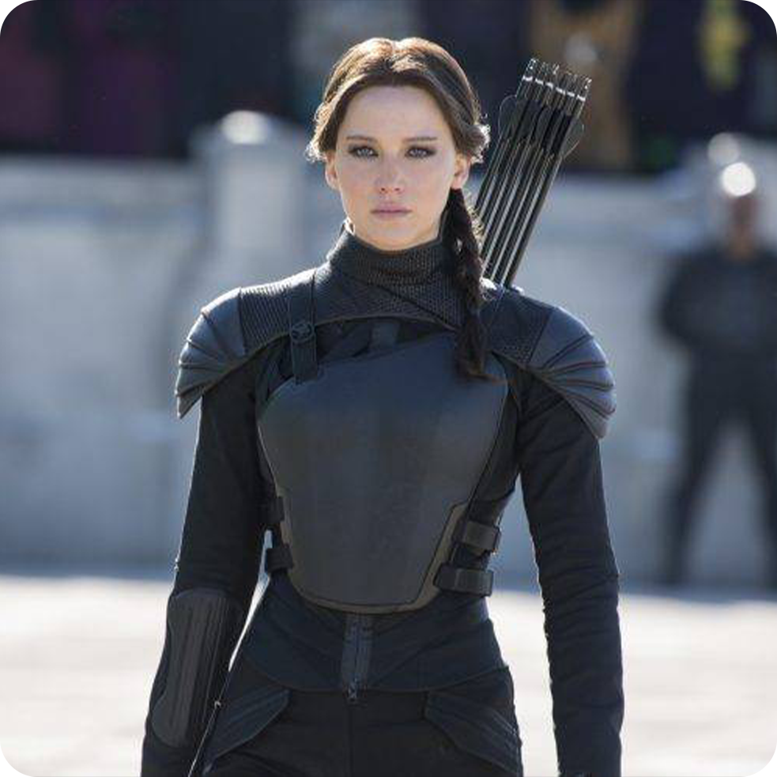
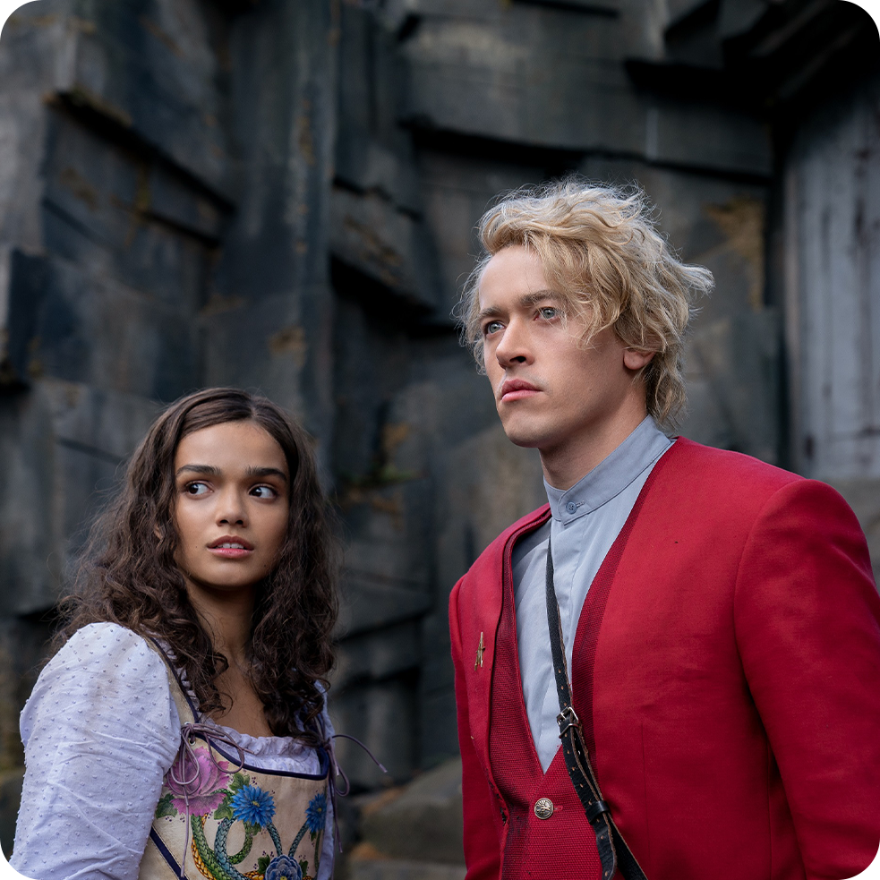
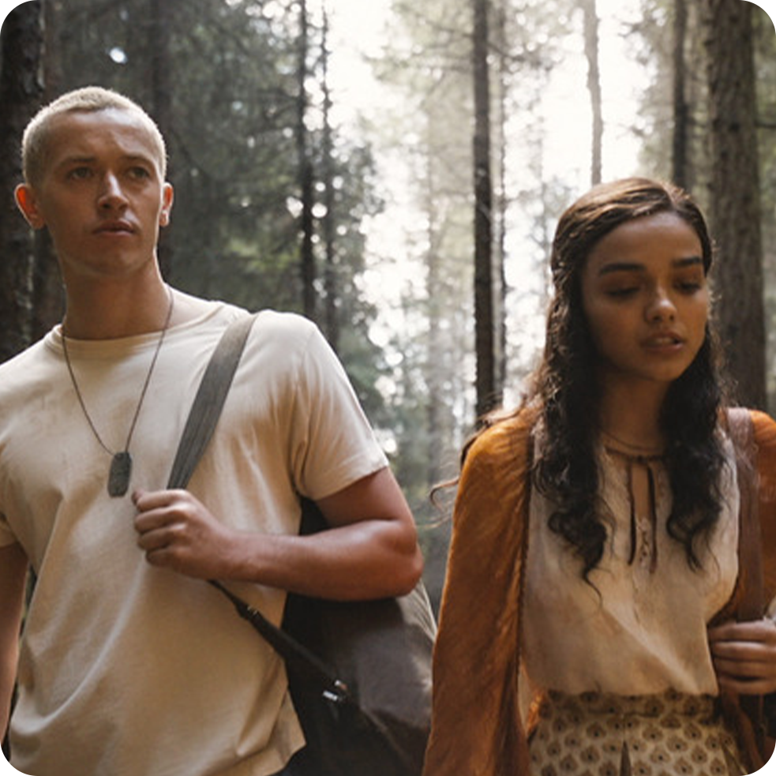
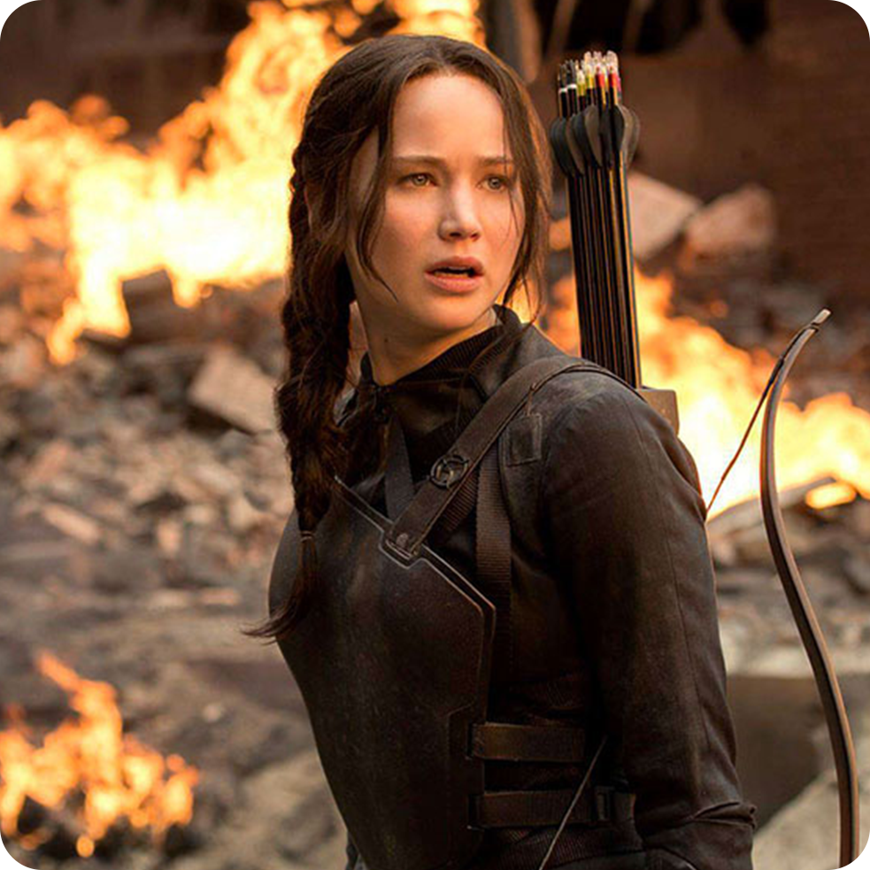
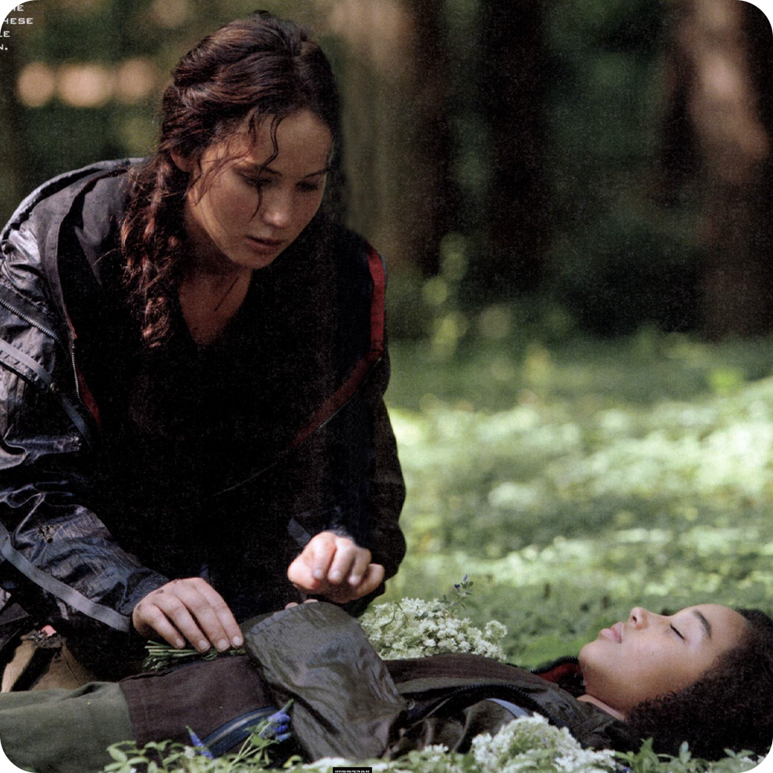

Faits divers
Chaque chiffre raconte une bataille technique, artistique et humaine pour donner vie à une saga devenue culte. Des forêts de Caroline du Nord aux studios de Los Angeles, Hunger Games n’est pas qu’un film — c’est une guerre visuelle orchestrée avec précision.
44M
Budget alloué
40K
Heures cumulées de post-production
324
Figurants
12
Districts avec des décors réels





Présentation de la direction artistique
Dès sa sortie, le film a marqué une génération. Son esthétique, ses choix narratifs et sa mise en scène ont influencé la pop culture, la mode et même les mouvements sociaux.
Le tournage s’est déroulé dans des décors naturels aux États-Unis, notamment en
Caroline du Nord, pour capturer l’atmosphère brute des districts.
Chaque lieu a été choisi pour sa capacité à incarner visuellement l’oppression, la
survie et le contraste avec le luxe du Capitole.
Les équipes ont bâti des environnements immersifs mêlant structures réelles et
éléments numériques.
Des villages délabrés aux arènes high-tech, chaque décor a été pensé pour renforcer
la tension narrative et l’identité visuelle de chaque district.
L’univers visuel de Hunger Games repose sur une dualité forte : pauvreté vs
extravagance.
La direction artistique a orchestré les couleurs, les textures et les symboles pour
créer un monde dystopique crédible, où chaque détail raconte une histoire.
Les comédiens ont suivi des entraînements physiques intensifs : tir à l’arc, combat,
survie en milieu naturel.
Mais aussi un travail émotionnel pour incarner la peur, la révolte et la résilience
des tributs face à l’arène et au Capitole.
Les costumes sont un langage visuel à part entière. Du style flamboyant d’Effie
Trinket aux tenues fonctionnelles de Katniss,
chaque pièce exprime un statut social, une idéologie ou une transformation
intérieure. Le maquillage du Capitole pousse l’extravagance à l’absurde.
Les scènes d’arène, les mutations génétiques et les flammes du geai moqueur ont été
créées grâce à des effets spéciaux de pointe.
Le mélange de CGI et d’effets pratiques a permis de maintenir une esthétique
réaliste et immersive.
La bande-son, composée par James Newton Howard, joue un rôle clé dans l’émotion du
film.
Sons naturels, silences pesants et thèmes musicaux marquent les moments de tension,
de révolte ou d’espoir.
Le chant du geai moqueur est devenu un symbole sonore de résistance.
Le tournage s’est étalé sur plusieurs mois, alternant entre scènes en extérieur
et séquences en studio.
Chaque phase a demandé une coordination millimétrée entre les équipes
techniques, artistiques et logistiques pour respecter les délais et la vision du
réalisateur.
Conditions météo imprévisibles, scènes de foule complexes, effets
pyrotechniques risqués… Le tournage a été semé d’obstacles.
Mais grâce à une équipe soudée et inventive, chaque défi a été transformé en
opportunité créative.
Dès sa sortie, Hunger Games a marqué une génération.
Son esthétique, ses choix narratifs et son univers visuel ont influencé la
mode, la pop culture et les mouvements sociaux.
Le tournage a contribué à créer une œuvre qui dépasse le cadre du cinéma.